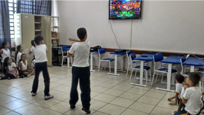

Metodologia


O presente trabalho traz uma pesquisa sobre “Os desafios da educação física com a globalização”. O trabalho foi baseado por meio de pesquisas realizadas em sites, artigos científicos e livros. Para Richardson (1999), pesquisa é um processo de construção do conhecimento que tem por objetivo gerar novos conhecimentos ou refutá-los, constituindo-se num processo de aprendizagem tanto do indivíduo que a realiza, quanto da sociedade, na qual esta se desenvolve.